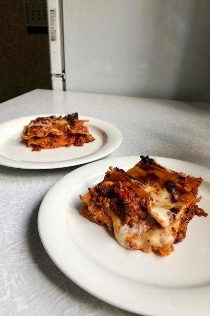

Punane kaste:
Valge kaste:
Esmalt haki sibul, küüslauk, porgand ja seller väikesteks tükkideks. Pruunista pannil sibul ja küüslauk, lisa seller ja porgand. Kui oled eelnevalt mainitut veidi aega praadinud, võid lisada hakkliha. Kui hakkliha on pruunistunud, lisa purustatud tomatid ja tomatipasta. Maitsesta endale meelepäraselt ja lase segul pannil podiseda umbes 7 minutit.
Samal ajal valmista valge kaste. Lisa poti põhja või ja lase sulada. Seejärel lisa üks supilusikatäis jahu. Sega korralikult. Nüüd võid lisada piima. Kui segu on veidi soojenenud, maitsesta korralikult ja lisa riivitud juust.
Kui mõlemad kastmed on valmis, saad hakata lasanjet vormi laduma. Esimeseks kihiks lisa punane kaste, seejärel lisa esimene kiht plaate. Uueks kihiks tuleb jälle lisada punast kastet, kuid sel korral pane lisaks ka valget kastet. Siis on jälle plaatide kord ning jätka tegevust, kuni saavutad soovitud kõrguse.
Küpseta lasanjet ahjus umbes tund kuni lasanje on pealt mõnusalt kuldne. Enne ahjust välja võtmist lisa viimasele kihile veel riivitud juustu. Lase veidi jahtuda ja naudi!